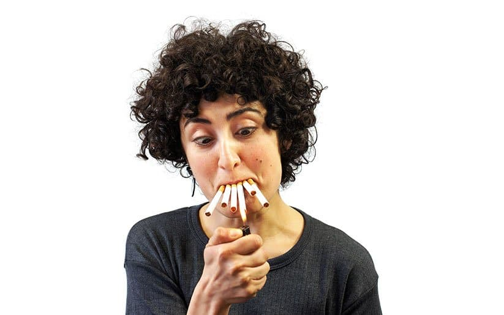

El tabaquismo es una adicción física y psicológica provocada principalmente por la nicotina, la cual genera dependencia cerebral y sensaciones placenteras inmediatas. Las causas incluyen factores sociales (presión de grupo, entorno familiar), psicológicos (estrés, ansiedad, depresión) y una temprana edad de inicio, a menudo en la adolescencia
Principales Causas del Tabaquismo:
Adicción a la Nicotina: Componente psicoactivo que crea dependencia física, liberando dopamina y condicionando al cerebro a necesitarla para evitar el malestar.
Factores Sociales y Entorno:
Influencia del entorno: Tener padres o amigos fumadores aumenta la probabilidad.
Presión social: Especialmente en la adolescencia, el deseo de encajar o parecer "cool".
Publicidad y medios: Influencia de la industria tabacalera en películas, redes sociales y televisión.
Factores Psicológicos y Emocionales:
Manejo del estrés/ansiedad: Muchos fuman creyendo que alivia tensiones, aunque en realidad el tabaco aumenta la ansiedad a largo plazo.

Baja autoestima o problemas personales.
Edad de Inicio: La mayoría de los fumadores comienzan durante la infancia o adolescencia.
Factores Genéticos: Estudios sugieren que la genética heredada influye en la propensión a la adicción a la nicotina.

Las causas que llevan a empezar a fumar están relacionadas con múltiples factores sociales y psicológicos:

La influencia del grupo: el deseo de sentirse parte de un grupo de amigos o de no sentirse excluido puede ser un impulso muy fuerte.
El sentimiento de rebeldía: para algunos adolescentes, fumar puede ser una forma de romper las normas y afirmar su autonomía.

El contexto familiar y cultural: crecer en una familia de fumadores o en un entorno en el que fumar está normalizado puede aumentar la probabilidad de empezar a fumar.

Aunque las experiencias tempranas suelen estar relacionadas con factores externos, la razón para seguir fumando reside en la química de nuestro cerebro.
Nadie decide en un escritorio desarrollar una adicción. El camino que conduce a la adicción al tabaco es casi siempre gradual y en él influyen una combinación de factores personales, sociales y biológicos. A menudo, los primeros cigarrillos se encienden durante la adolescencia, un periodo de gran experimentación y construcción de la identidad.